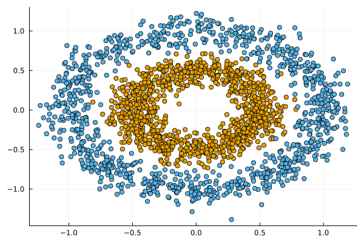

JointEnergyModels.jl
Documentation for JointEnergyModels.jl.
Joint Energy Models in Julia.


JointEnergyModels.jl is a package for training Joint Energy Models in Julia. Joint Energy Models (JEM) are hybrid models that learn to discriminate between classes $y$ and generate input data $x$. They were introduced in Grathwohl et al. (2020), which provides the foundation for the methodologies implemented in this package.
🔁 Status
This package is still in its infancy and the API is subject to change. Currently, the package can be used to train JEMs for classification. It is also possible to train pure Energy-Based Models (EBMs) for the generative task only. The package is compatible with Flux.jl. Work on compatibility with MLJ.jl (through MLJFlux.jl) is currently under way.
We welcome contributions and feedback at this early stage. To install the development version of the package you can run the following command:
using Pkg
Pkg.add(url="https://github.com/juliatrustworthyai/JointEnergyModels.jl")🔍 Usage Example
Below we first generate some synthetic data:
nobs=2000
X, y = make_circles(nobs, noise=0.1, factor=0.5)
Xplot = Float32.(permutedims(matrix(X)))
X = table(permutedims(Xplot))
plt = scatter(Xplot[1,:], Xplot[2,:], group=y, label="")
batch_size = Int(round(nobs/10))
display(plt)
The MLJ compatible classifier can be instantiated as follows:
𝒟x = Normal()
𝒟y = Categorical(ones(2) ./ 2)
sampler = ConditionalSampler(𝒟x, 𝒟y, input_size=size(Xplot)[1:end-1], batch_size=batch_size)
clf = JointEnergyClassifier(
sampler;
builder=MLJFlux.MLP(hidden=(32, 32, 32,), σ=Flux.relu),
batch_size=batch_size,
finaliser=x -> x,
loss=Flux.Losses.logitcrossentropy,
)It uses the MLJFlux package to build the model:
println(typeof(clf) <: MLJFlux.MLJFluxModel)trueThe model can be wrapped in data and trained using the fit! function:
mach = machine(clf, X, y)
fit!(mach)The results are visualised below. The model has learned to discriminate between the two classes (as indicated by the contours) and to generate samples from each class (as indicated by the stars).

🎓 References
Grathwohl, Will, Kuan-Chieh Wang, Joern-Henrik Jacobsen, David Duvenaud, Mohammad Norouzi, and Kevin Swersky. 2020. “Your Classifier Is Secretly an Energy Based Model and You Should Treat It Like One.” In. https://openreview.net/forum?id=Hkxzx0NtDB.